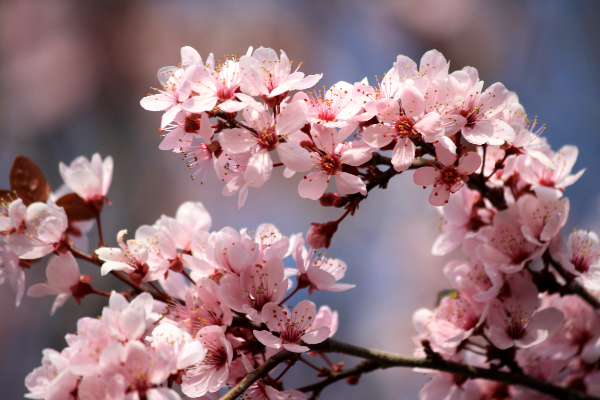
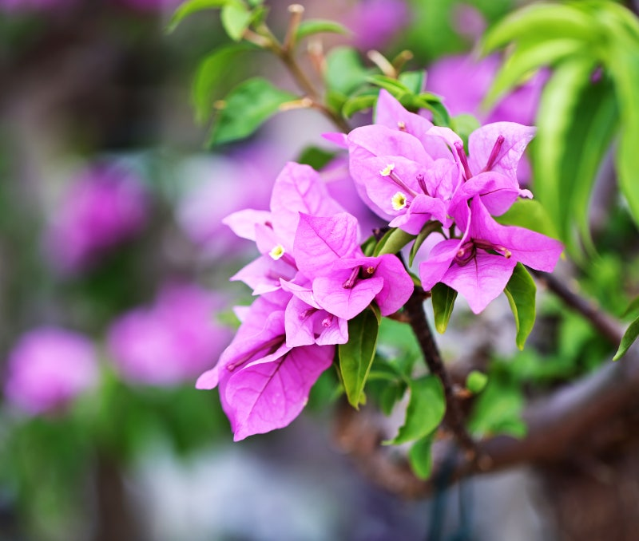
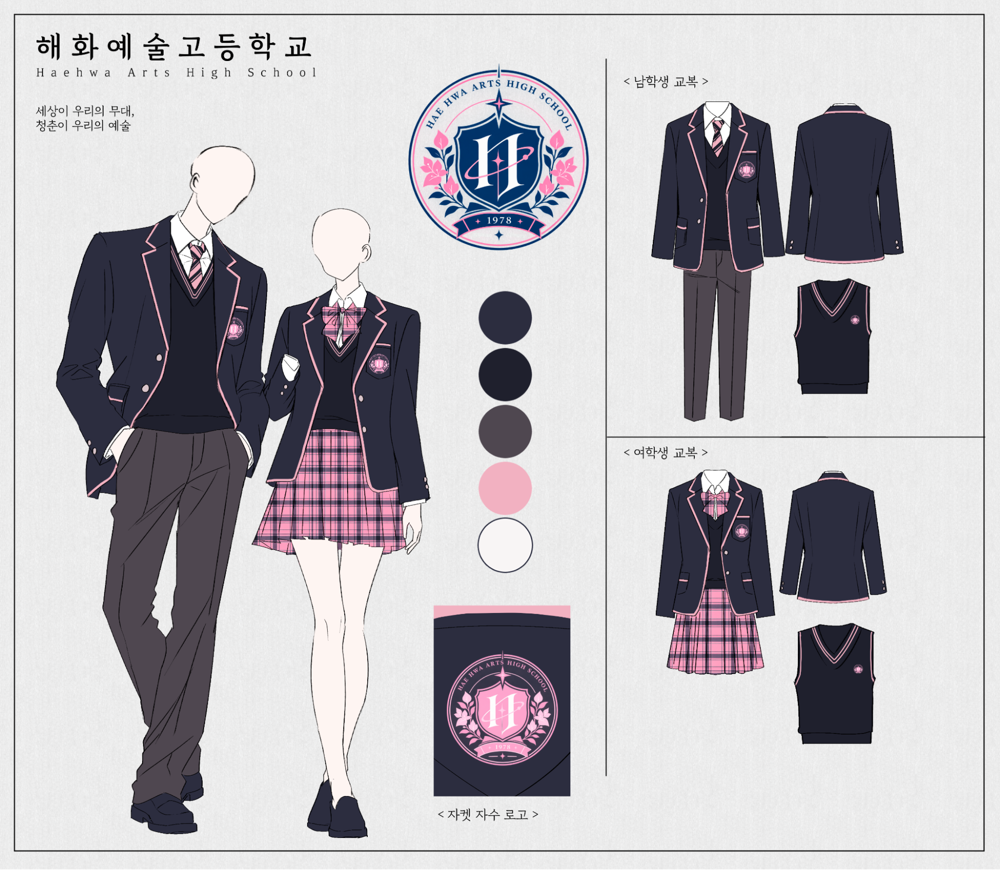

세상이 우리의 무대,
청춘이 우리의 예술
해화예술고등학교 방문을 환영합니다.
해화예술고등학교는 현대의 서울을 배경으로 하는 가상의 특수목적고등학교입니다.
해화예술고등학교는 1978년 3월 3일 서울특별시 한서구 은백동에 개교하여
21세기 문화예술을 주도하는 예술인을 육성하기 위해 끊임없이 노력해 왔습니다.
해화예술고등학교 학생들은 꿈과 열정을 갖고 세계를 향해 도전하고 있으며,
교육공동체는 학생들의 꿈을 향하는 모든 도전에 최상의 예술교육으로 적극 지원하고 있습니다.
조화와 화합, 창의성. 우리가 추구하는 교육방침입니다.
미래 예술 인재를 키우는 행복한 학교라는 비전과 창의와 감성으로,
미래를 열어가는 행복한 예술인 육성이라는 교육 목표를 가지고 앞으로 나아가겠습니다.
해화예술고등학교 학교장 이선화
학교 상징
교훈
- 조화調和
- 화합和合
- 창의성創意性
교표

교표
교표는 예술을 통해 각자의 개성을 발견하고, 무한한 가능성을 향해 나아가는 학생들의 모습을 상징한다. 우주를 연상시키는 별과 궤도는 학생들이 지닌 무한한 잠재력과 미래를 향한 도전을 의미하며, 방패 형태의 문장은 예술을 배우고 탐구하는 학생들을 보호하고 지지하는 학교의 역할을 나타낸다.
교목·교화

교목 벚나무
- 학명
- Prunus serrulata
- 의미
- 아름다움, 새로운 시작
- 상징
- 짧지만 찬란하게 피어나는 아름다움과 새로운 출발

교화 부겐빌레아
- 학명
- Bougainvillea glabra
- 의미
- 열정, 생명력, 정
- 상징
- 화려한 색채와 강인한 생명력, 창의적인 표현
교복
